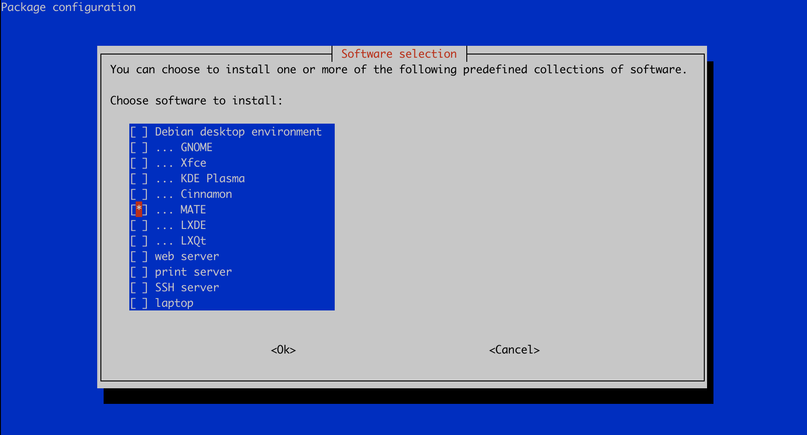

手动安装桌面环境¶
注意
本节内容只适用于熟悉 Linux 操作系统的用户，否则建议使用已配置好的桌面环境。
Vlab 默认提供的桌面环境为 Xfce4，如果你想安装 MATE, LXDE 等其他桌面环境，可以按照如下指示操作。以下将以在 Debian 11 上安装 MATE 桌面环境为例。
安装 LightDM 和 VNC¶
如果使用的是不带桌面的镜像，为了与 Vlab 的 VNC 后端连接，需要安装我们提供的 vlab-vnc 软件包（限 Debian / Ubuntu，暂无 RPM 安装包）。
先添加 Vlab 软件源。以 root 权限运行：
echo "deb [trusted=yes] https://vlab.ustc.edu.cn/repo/ ./" > /etc/apt/sources.list.d/vlab.list
安装 vlab-vnc
apt update
apt install vlab-vnc
在安装过程中会询问键盘布局，选择 English (US) 即可。
此外，Debian 镜像默认仅有设置了随机密码的 root。为了方便桌面使用（以 root 操作桌面不是一个好习惯），建议创建一个新用户。
adduser vlab
安装桌面环境¶
经过测试，以下操作可能导致 SSH 连接中断，因此建议在救援模式（Web, SSH）中操作。使用 tasksel 安装桌面环境。
# 如果遇到安装问题，执行以下两行命令
apt-get install --reinstall debconf
dpkg-reconfigure tasksel
# 启动 tasksel 配置菜单
tasksel
进入交互式页面，选择你需要的桌面环境后输入回车即可安装，这里以 MATE 为例。

安装完成后重启系统便可以使用浏览器的在线登录或使用 TigerVNC 客户端登录你的虚拟机，具体做法可参考左侧文档。进一步的配置，如建立新用户，安装中文环境与输入法等请参考网络上的 Linux 教程。
注意
必须使用 LightDM 桌面管理器。若安装桌面环境时自动安装了其他桌面管理器，请使用命令 dpkg-reconfigure lightdm 切换回 LightDM 桌面管理器。若安装了 network-manager 软件包请务必卸载，否则可能导致无法连接网络。
更加精简的安装
由于 Vlab 环境不需要诸如蓝牙、无线网络等配置，而 tasksel 默认安装的是完整环境，有经验的用户可以考虑自行使用 apt 安装桌面环境所需的包。此外，--no-install-recommends 选项可以更激进地避免安装不必要的包，推荐经验丰富的用户选择。
不兼容的软件包
目前已知 connman 会导致网络连接问题，如果安装了 connman 请卸载。